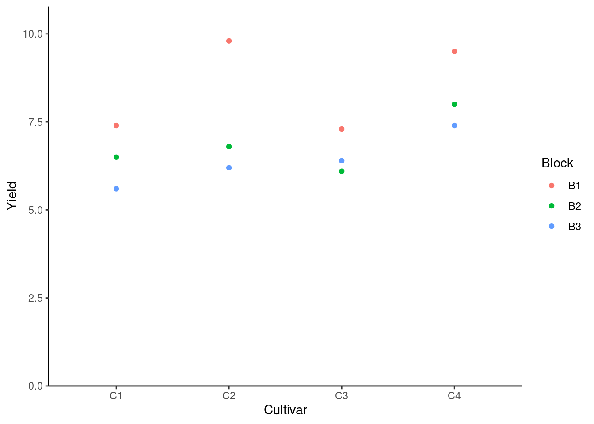

# (install &) load packages
pacman::p_load(
conflicted,
desplot,
emmeans,
ggtext,
multcomp,
multcompView,
tidyverse)
# handle function conflicts
conflicts_prefer(dplyr::filter)
conflicts_prefer(dplyr::select)
# load data
path <- "https://raw.githubusercontent.com/SchmidtPaul/dsfair_quarto/master/data/Clewer&Scarisbrick2001.csv"
dat <- read_csv(path)One Way RCBD Analysis
this is a reading note of this tutorial.
the columns block and cultivar should be encoded as factors
# the columns block and cultivar should be encoded as factors
dat <- dat %>%
mutate(across(c(block, cultivar), ~ as.factor(.x)))
dat# A tibble: 12 × 5
block cultivar yield row col
<fct> <fct> <dbl> <dbl> <dbl>
1 B1 C1 7.4 2 1
2 B1 C2 9.8 3 1
3 B1 C3 7.3 1 1
4 B1 C4 9.5 4 1
5 B2 C1 6.5 1 2
6 B2 C2 6.8 4 2
7 B2 C3 6.1 3 2
8 B2 C4 8 2 2
9 B3 C1 5.6 2 3
10 B3 C2 6.2 1 3
11 B3 C3 6.4 3 3
12 B3 C4 7.4 4 3Mini exercise
Get mean yeild per calt and sourt best caul to top
dat %>%
group_by(cultivar) %>%
summarise(mean_yield = mean(yield)) %>%
arrange(desc(mean_yield))# A tibble: 4 × 2
cultivar mean_yield
<fct> <dbl>
1 C4 8.3
2 C2 7.6
3 C3 6.6
4 C1 6.5Using dlookr::describe()
dlookr::describe() is more useful than summarise.
Important
Don’t load dlookr, instead only call the function dlookr::describe(). Otherwise it will affect font size of ggplot. More info on this tutorial.
About Percentile
dat %>%
group_by(cultivar) %>%
dlookr::describe(yield)Registered S3 methods overwritten by 'dlookr':
method from
plot.transform scales
print.transform scales# A tibble: 4 × 27
described_variables cultivar n na mean sd se_mean IQR skewness
<chr> <fct> <int> <int> <dbl> <dbl> <dbl> <dbl> <dbl>
1 yield C1 3 0 6.5 0.9 0.520 0.9 0
2 yield C2 3 0 7.6 1.93 1.11 1.8 1.55
3 yield C3 3 0 6.6 0.624 0.361 0.600 1.29
4 yield C4 3 0 8.3 1.08 0.624 1.05 1.15
# ℹ 18 more variables: kurtosis <dbl>, p00 <dbl>, p01 <dbl>, p05 <dbl>,
# p10 <dbl>, p20 <dbl>, p25 <dbl>, p30 <dbl>, p40 <dbl>, p50 <dbl>,
# p60 <dbl>, p70 <dbl>, p75 <dbl>, p80 <dbl>, p90 <dbl>, p95 <dbl>,
# p99 <dbl>, p100 <dbl>p00 … percentile e.g. p01 <dbl>: 1% of value smaller than <dbl>. p50 is the min. p50 is the mediam. p100 is the max.
More Application using dlookr::describe()
We can also get can summarize per block and per cultivar.
dat %>%
group_by(cultivar) %>%
dlookr::describe(yield) %>%
select(cultivar:sd, p00, p50, p100) %>%
arrange(desc(mean))# A tibble: 4 × 8
cultivar n na mean sd p00 p50 p100
<fct> <int> <int> <dbl> <dbl> <dbl> <dbl> <dbl>
1 C4 3 0 8.3 1.08 7.4 8 9.5
2 C2 3 0 7.6 1.93 6.2 6.8 9.8
3 C3 3 0 6.6 0.624 6.1 6.4 7.3
4 C1 3 0 6.5 0.9 5.6 6.5 7.4Extract Values and Save as a Vector
It’s possible to extract certain values (e.g. here the means per cultivar) from a tibble and save it into a vector.
# extract mean values from tibble into a vector
mymeans <- dat %>%
group_by(cultivar) %>%
summarise(mean_yield = mean(yield)) %>%
ungroup()
mymeans# A tibble: 4 × 2
cultivar mean_yield
<fct> <dbl>
1 C1 6.5
2 C2 7.6
3 C3 6.6
4 C4 8.3# option 1: with $ just like in baseR
mymeans$mean_yield[1] 6.5 7.6 6.6 8.3# option 2: with pull() from dplyr
mymeans %>% pull(mean_yield)[1] 6.5 7.6 6.6 8.3Plot the Data
ggplot(data = dat) +
aes(y = yield, x = cultivar, color = block) +
geom_point() +
scale_x_discrete(
name = "Cultivar"
) +
scale_y_continuous(
name = "Yield",
limits = c(0, NA),
expand = expansion(mult = c(0, 0.1))
) +
scale_color_discrete(
name = "Block"
) +
theme_classic()
From the plot we know that no matter under which circumstance, field 1 yields the best result.
Linear Model
mod <- lm(yield ~ cultivar + block, data = dat)
mod
Call:
lm(formula = yield ~ cultivar + block, data = dat)
Coefficients:
(Intercept) cultivarC2 cultivarC3 cultivarC4 blockB2 blockB3
7.75 1.10 0.10 1.80 -1.65 -2.10 The formula of the yield is:
\[ yield = Int + cultivar_i + block_j \]
where \(cultivar_i\) is the treatment coefficient (in our case, the effect of using different cultivars), \(block_j\) is the block coefficient. The intercept (\(Int\)) corresponds to the baseline, i.e. the yield of using C1 and on block 1. The result of using different treatment on different blocks can be summarized as following:
- Pred C1 in B1: \(7.75 + 0 + 0 = 7.75\)
- Pred C1 in B2: \(7.75 + 0 + -1.65 = 6.10\)
- Pred C1 in B3: \(7.75 + 0 + -2.10 = 5.65\)
- …
- Pred C4 in B1: \(7.75 + 1.80 + 0 = 9.55\)
- Pred C4 in B2: \(7.75 + 1.80 + -1.65 = 7.90\)
- Pred C4 in B3: \(7.75 + 1.80 + -2.10 = 7.45\)
ANOVA
ANOVA <- anova(mod)
ANOVAAnalysis of Variance Table
Response: yield
Df Sum Sq Mean Sq F value Pr(>F)
cultivar 3 6.63 2.21 5.525 0.036730 *
block 2 9.78 4.89 12.225 0.007651 **
Residuals 6 2.40 0.40
---
Signif. codes: 0 '***' 0.001 '**' 0.01 '*' 0.05 '.' 0.1 ' ' 1EM Means
Instead of the effect of different blocks, people only interested in which cultivar is the most effective. Thus we need to evaluate the mean yield of each cultivar.
Manual calculation of emmeans for cultivars:
- emmean C1: \(7.75 + 0 + mean(c(0, -1.65, -2.10)) = 6.5\)
- emmean C2: \(7.75 + 1.10 + mean(c(0, -1.65, -2.10)) = 7.6\)
- emmean C3: \(7.75 + 0.10 + mean(c(0, -1.65, -2.10)) = 6.6\)
- emmean C4: \(7.75 + 1.80 + mean(c(0, -1.65, -2.10)) = 8.3\)
Note that these values are identical to the simple mean (mymeans variables). But emmean is still preferred, especially when there’s missing data and when mixed models are used. In those cases, emmean and simple mean won’t be identical.
mean_comp <- mod %>%
emmeans(specs = ~ cultivar) %>% # adj. mean per cultivar
cld(adjust = "none", Letters = letters) # compact letter display (CLD)
mean_comp cultivar emmean SE df lower.CL upper.CL .group
C1 6.5 0.365 6 5.61 7.39 a
C3 6.6 0.365 6 5.71 7.49 a
C2 7.6 0.365 6 6.71 8.49 ab
C4 8.3 0.365 6 7.41 9.19 b
Results are averaged over the levels of: block
Confidence level used: 0.95
significance level used: alpha = 0.05
NOTE: If two or more means share the same grouping symbol,
then we cannot show them to be different.
But we also did not show them to be the same. Plot the Result
Code
my_caption <- "Black dots represent raw data. Red dots and error bars represent adjusted means with 95% confidence limits per cultivar. Means followed by a common letter are not significantly different according to the t-test."
ggplot() +
aes(x = cultivar) +
# black dots representing the raw data
geom_point(
data = dat,
aes(y = yield)
) +
# red dots representing the adjusted means
geom_point(
data = mean_comp,
aes(y = emmean),
color = "red",
position = position_nudge(x = 0.1)
) +
# red error bars representing the confidence limits of the adjusted means
geom_errorbar(
data = mean_comp,
aes(ymin = lower.CL, ymax = upper.CL),
color = "red",
width = 0.1,
position = position_nudge(x = 0.1)
) +
# red letters
geom_text(
data = mean_comp,
aes(y = emmean, label = str_trim(.group)),
color = "red",
position = position_nudge(x = 0.2),
hjust = 0
) +
scale_x_discrete(
name = "Cultivar"
) +
scale_y_continuous(
name = "Yield",
limits = c(0, NA),
expand = expansion(mult = c(0, 0.1))
) +
scale_color_discrete(
name = "Block"
) +
theme_classic() +
labs(caption = my_caption) +
theme(plot.caption = element_textbox_simple(margin = margin(t = 5)),
plot.caption.position = "plot")
You use a split-plot design, when one factor is harder to randomize than the other. You first create main plots (=blocks inside your blocks) with respect to the harder-to-randomize factor.
What will happen when we don’t consider the Block Effect
We build a linear model using solely the cultivar:
mod_no_block <- lm(yield ~ cultivar, data = dat)
mean_comp_no_block <- mod_no_block %>%
emmeans(specs = ~ cultivar) %>% # adj. mean per cultivar
cld(adjust = "none", Letters = letters) # compact letter display (CLD)Code
my_caption <- "Black dots represent raw data. Red dots and error bars represent adjusted means with 95% confidence limits per cultivar. Means followed by a common letter are not significantly different according to the t-test."
ggplot() +
aes(x = cultivar) +
# black dots representing the raw data
geom_point(
data = dat,
aes(y = yield)
) +
# red dots representing the adjusted means
geom_point(
data = mean_comp_no_block,
aes(y = emmean),
color = "red",
position = position_nudge(x = 0.1)
) +
# red error bars representing the confidence limits of the adjusted means
geom_errorbar(
data = mean_comp_no_block,
aes(ymin = lower.CL, ymax = upper.CL),
color = "red",
width = 0.1,
position = position_nudge(x = 0.1)
) +
# red letters
geom_text(
data = mean_comp_no_block,
aes(y = emmean, label = str_trim(.group)),
color = "red",
position = position_nudge(x = 0.2),
hjust = 0
) +
scale_x_discrete(
name = "Cultivar"
) +
scale_y_continuous(
name = "Yield",
limits = c(0, NA),
expand = expansion(mult = c(0, 0.1))
) +
scale_color_discrete(
name = "Block"
) +
theme_classic() +
labs(caption = my_caption) +
theme(plot.caption = element_textbox_simple(margin = margin(t = 5)),
plot.caption.position = "plot")
This time the standard deviations of each cultivar become bigger. In addition, the letter are always “a”, meaning that t-test failed to find the statistic significance. The reason is that the model doesn’t know about the blocks and thinks some of the data (e.g. the highest point of C2) are noise.
Q&A
Is ANOVA in RCBD two-way ANOVA?
It depends on whom you ask. I think no. Because the definition of a two-way ANOVA is having two treatments. In this example there’s only one treatment, i.e. “cultivar”. The variable “block” is not what we really interested in.
Is RCBD the same as a nested ANOVA?
It’s not necessary true.
- Cross effect: \(A \ \& \ B: A + B + A:B\)
- Nested effect: \(B \ in \ A: A + A:B\)
In this case both cross effect and nested effect are not discussed.